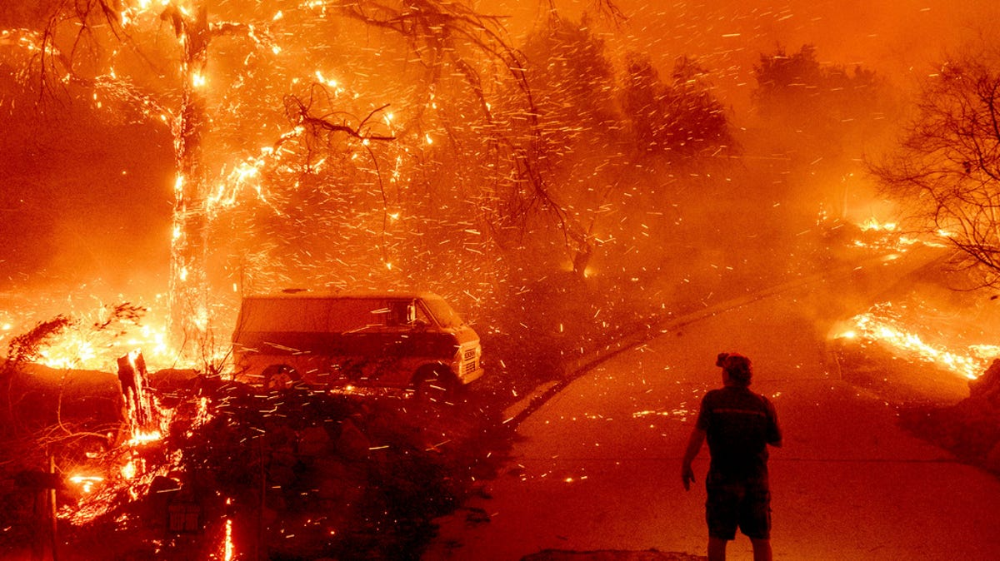
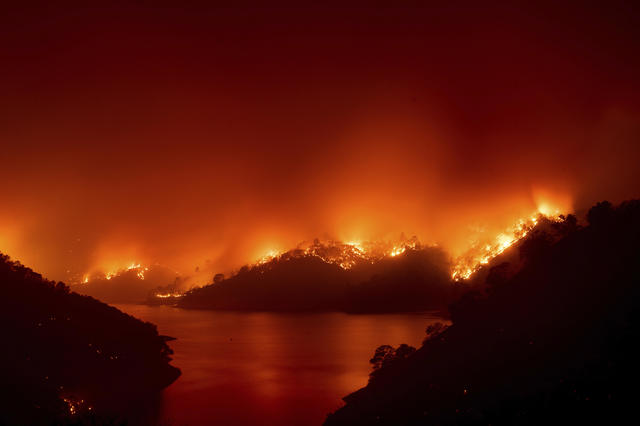
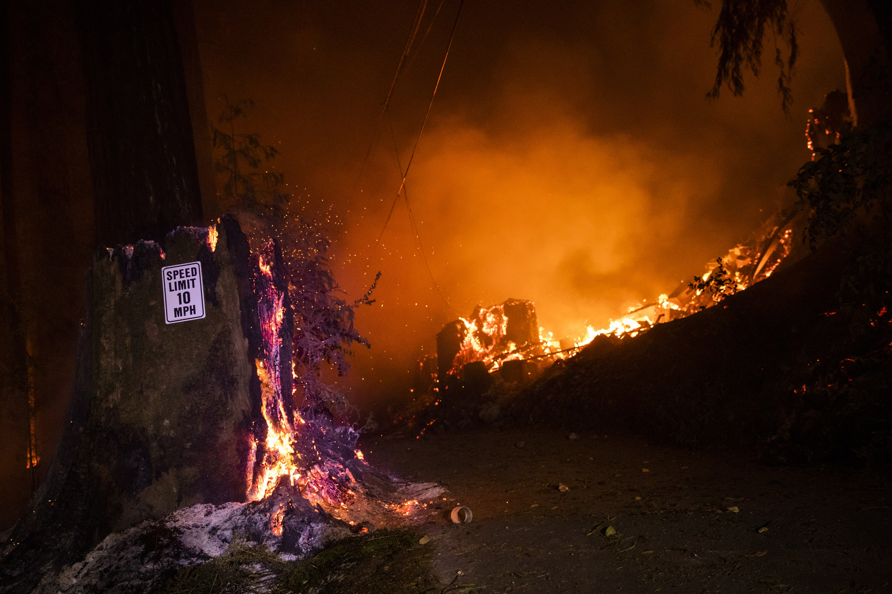
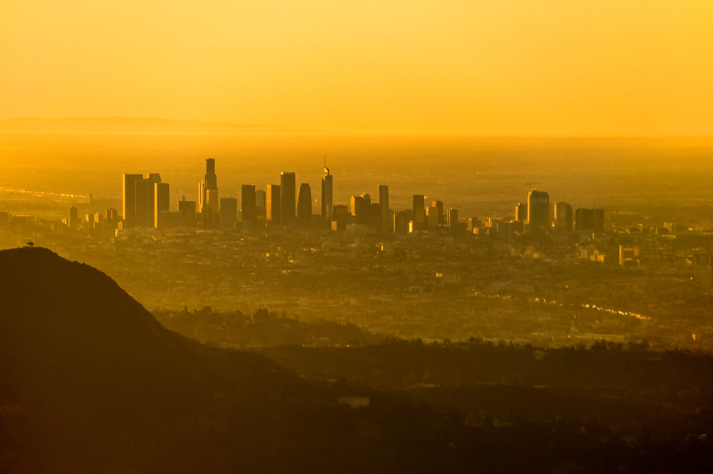
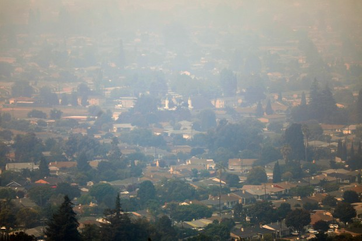
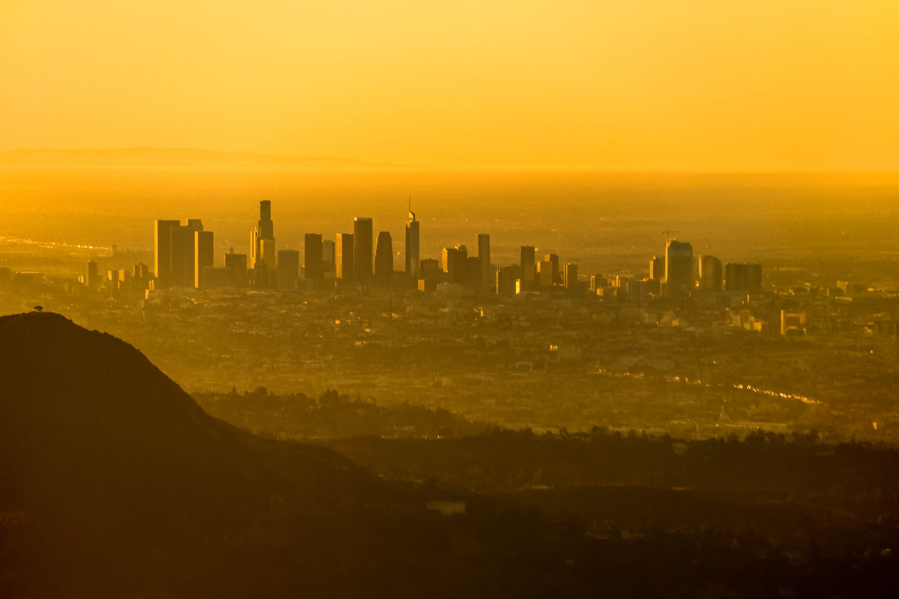
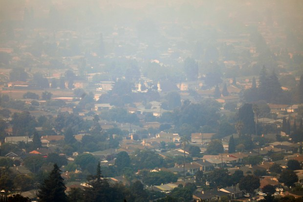

What's happening?
For each of the past few years, California has been devastated by its worst wildfire season in modern history. Millions of acres have been destroyed, thousands of residents have been forced to relocate, and numerous lives have been lost. These tragedies have also sparked a fierce national conversation on climate change, and intense fears about the inhabitability of a warmer world.
  
What are the patterns in California's wildfires over time? How much is destroyed? And why is this happening?
Is it nature?
Is it climate change?
Is it us?
*Hover over any bar for insights.*
*Hover over any bar for insights.*
How do we cause wildfires?
In the summer of 2020, the world was shocked by photos of orange and smoke-filled skies emerging from California. The smoke produced by wildfires traveled far and caused widespread respiratory problems across California and the West Coast.
 



Wind plays a significant role in spreading smoke, and in exacerbating wildfires themselves. The map below shows current active fires and wind patterns. In general, winds above 35mph (indicated in purple) are able to accelerate the spread of fires. Are you at risk?
Who is most impacted by Californian wildfires?
We've seen that more frequent and more destructive fires are becoming the norm in California, that humans are a primary cause of wildfires, and that Hispanics are being disproportionately affected.
What can we do to help those affected?
- Donate money.
- American Red Cross
- California Community Foundation’s Wildlife Relief Fund
- California Fire Foundation
- United Way of Greater Los Angeles
- Adopt or foster a pet.
- Just as humans have been displaced by these fires, so have their pets. LA Animal Services and other California-based shelters often post calls for fosters and adopters on their Facebook pages.
- Volunteer your time and skills.
- Caring Choices is a Northern California-based nonprofit which accepts applications from volunteers with medical backgrounds or other manual and technical skills - such as data entry, radio communications, or animal care - that are needed in the wake of these disasters.
This webpage is part of a final project for CS171: Visualization at Harvard University, Fall 2020. We'd like to thank our TF mentor, Elizabeth, and the rest of the CS171 teaching staff for their guidance and support on this project.
Project By:
Katherine Deng, Anna Li, Christina Wang
Data Sources:
- US Fires Data, 1992-2015
- California Fires Data, 2013-2020
- California Fire Polygons
- California 2010s County-Level Census Data
Image Sources:
None of these images are our own. Image links are included as comments in the code.
Process Book
Video Walkthrough [Insert Link]